阅读词表
| 词条 | 拼音 | 类型 | 说明 |
|---|---|---|---|
| 殷墟 | yīn xū | site_or_culture | 晚商都邑遗址，甲骨卜辞的重要出土地。 |
| 妇好 | fù hǎo | person | 商王武丁配偶，甲骨文中著名女性军事人物。 |
| 祭祀坑 | jì sì kēng | concept | 用于祭祀或埋藏祭品的坑穴。 |
| 二层台 | èr céng tái | concept | 墓室内用于放置随葬品或殉人的台阶状结构。 |
| 箭镞 | jiàn zú | artifact | 箭头，文中有青铜、石骨材质。 |
| 盘庚 | pán gēng | person | 商王名，以迁都殷地著称。 |
| 殉人 | xùn rén | concept | 陪葬或随葬的人。 |
| 銎 | qióng | manual | 斧、锄等器具安柄的孔；文中见“管銎斧”。 |
| 铜镞 | tóng zú | bronze_item | 青铜箭头。 |
| 窖穴 | jiào xué | concept | 地下储藏坑穴。 |
| 夯筑 | hāng zhù | concept | 用夯打方式筑成墙体或台基。 |
| 铜钺 | tóng yuè | bronze_item | 青铜钺，常象征军事权力。 |
| 羽箭 | yǔ jiàn | artifact | 带尾羽的箭。 |
| 人祭 | rén jì | concept | 以人作为祭品的祭祀行为。 |
| 汭 | ruì | manual | 河流汇合或弯曲处；文中解释殷都大学所在地“入”的可能含义。 |
| 鬯 | chàng | manual | 古代祭祀用的香酒。 |
| 跽 | jì | manual | 长跪，臀部离开脚跟而挺身；文中见“跽坐”。 |
| 禳 | ráng | manual | 祭祷消除灾祸；文中见“禳解”。 |
| 卜骨 | bǔ gǔ | artifact | 用于占卜的兽骨。 |
| 铜戈 | tóng gē | bronze_item | 青铜戈，商周常见兵器。 |
| 人奠基 | rén diàn jī | concept | 建筑奠基时以人作为牺牲的行为。 |
| 奠基 | diàn jī | concept | 建筑开始时的基础工程或相关仪式。 |
| 巫医 | wū yī | concept | 兼具巫术占卜和治疗职能的人。 |
| 水牛 | shuǐ niú | concept | 商人畜牧和祭祀中涉及的家畜。 |
| 腰坑殉狗 | yāo kēng xùn gǒu | concept | 墓穴腰部小坑中埋狗的商人葬俗。 |
| 《合集》 | hé jí | 项目词典 | 《甲骨文合集》的简称。 |
| 夯土台基 | hāng tǔ tái jī | 项目词典 | 用夯土筑成的高台式建筑基础。 | 用夯土筑成的建筑台基。 |
| 甲骨卜辞 | jiǎ gǔ bǔ cí | 项目词典 | 商代刻写在甲骨上的占卜文字。 | 刻写在龟甲兽骨上的占卜文字。 | 刻写在甲骨上的占卜记录。 | 刻写在龟甲兽骨上的占卜辞句。 |
| 夔龙纹 | kuí lóng wén | 项目词典 | 青铜器常见的夔龙形纹饰。 |
| 宫殿区 | gōng diàn qū | 项目词典 | 都邑中宫殿和王室活动集中的区域。 |
| 王陵区 | wáng líng qū | 项目词典 | 王室墓葬集中的区域。 | 王室墓葬和祭祀坑集中的区域。 |
| 绿松石 | lǜ sōng shí | 项目词典 | 一种蓝绿色矿石，常用于装饰。 | 蓝绿色矿物，古代常作装饰嵌片。 | 蓝绿色矿物，古代常作饰物。 |
| 角斗士 | jué dòu shì | 项目词典 | 古罗马竞技表演中的搏斗者。 |
| 铜礼器 | tóng lǐ qì | 项目词典 | 用于礼仪或祭祀的青铜器。 |
| 亚长 | yà zhǎng | 项目词典 | 殷墟花园庄东M54墓主。 |
| 人牲 | rén shēng | 项目词典 | 被用于祭祀的人。 | 被用于祭祀或献祭的人。 | 被杀用于祭祀的人。 |
| 从容 | cóng róng | 项目词典 | 不慌不忙。 |
| 俯身 | fǔ shēn | 项目词典 | 身体向前伏下。 |
| 先妣 | xiān bǐ | 项目词典 | 已故女性祖先。 |
| 卜辞 | bǔ cí | 项目词典 | 甲骨占卜后刻写或记录的辞句。 | 甲骨上记录占卜的文字。 | 占卜时刻写或记录的辞句。 |
| 受业 | shòu yè | 项目词典 | 从师学习。 |
| 商族 | shāng zú | 项目词典 | 商王朝建立前后的族群共同体。 |
| 商王 | shāng wáng | 项目词典 | 商朝王。 |
| 地层 | dì céng | 项目词典 | 遗址中不同时期堆积形成的层次。 |
| 坑壁 | kēng bì | 项目词典 | 坑穴侧壁。 |
| 坑底 | kēng dǐ | 项目词典 | 坑穴底部，常用于描述考古遗迹。 | 坑穴底部。 |
| 基址 | jī zhǐ | 项目词典 | 建筑物遗留下来的基础位置。 |
| 填土 | tián tǔ | 项目词典 | 填入坑穴或遗迹中的土层。 |
| 壁龛 | bì kān | 项目词典 | 墙壁或坑壁上凿出的供放置物品的小龛。 |
| 夔龙 | kuí lóng | 项目词典 | 青铜纹饰中常见的龙形神兽。 |
| 夯土 | hāng tǔ | 项目词典 | 把土层层夯实形成建筑基础或城墙的技术。 |
| 始祖 | shǐ zǔ | 项目词典 | 一个族群传说中的最早祖先。 |
| 宋国 | sòng guó | 项目词典 | 周初分封商王族后裔之国。 |
| 征伐 | zhēng fá | 项目词典 | 出兵讨伐。 |
| 战俘 | zhàn fú | 项目词典 | 战争中捕获的人。 |
| 捆绑 | kǔn bǎng | 项目词典 | 用绳索等束缚身体。 |
| 族徽 | zú huī | 项目词典 | 族群标识，常见于商周青铜器铭文。 |
| 杀祭 | shā jì | 项目词典 | 以杀牲或杀人作为祭祀的仪式。 | 通过杀牲或杀人进行的祭祀。 | 通过杀人或杀牲举行的祭祀。 |
| 柱洞 | zhù dòng | 项目词典 | 考古遗迹中柱子留下的洞穴痕迹。 |
| 椁室 | guǒ shì | 项目词典 | 墓葬中放置棺木的木构外室。 |
| 殷商 | yīn shāng | 项目词典 | 商朝后期文化和政权。 | 商代后期以殷墟为中心的商王朝阶段。 |
| 殷都 | yīn dū | 项目词典 | 商朝后期都城区域，今安阳殷墟一带。 | 商朝后期都城区域。 | 晚商都城，通常指安阳殷墟。 |
| 海贝 | hǎi bèi | 项目词典 | 贝壳，古代可作装饰、随葬品或货币。 |
| 版筑 | bǎn zhù | 项目词典 | 夹板填土后层层夯实的筑墙方法。 |
| 献祭 | xiàn jì | 项目词典 | 把祭品奉献给神灵或祖先。 | 向神灵、祖先等奉献祭品。 |
| 玄鸟 | xuán niǎo | 项目词典 | 商族起源神话中的神鸟或天命媒介。 |
| 玉戈 | yù gē | 项目词典 | 玉制戈，多为礼仪性器物。 |
| 穿孔 | chuān kǒng | 项目词典 | 贯穿形成孔洞，文中多指颅骨创口。 |
| 繁衍 | fán yǎn | 项目词典 | 逐渐增多、传续后代。 |
| 羌人 | qiāng rén | 项目词典 | 西方族群，常见于商代卜辞。 |
| 肋骨 | lèi gǔ | 项目词典 | 胸部骨骼。 |
| 股骨 | gǔ gǔ | 项目词典 | 大腿骨。 |
| 肱骨 | gōng gǔ | 项目词典 | 上臂骨。 |
| 货贝 | huò bèi | 项目词典 | 作为货币使用的贝。 |
| 遗存 | yí cún | 项目词典 | 古代活动留下的遗物、遗迹或现象。 |
| 铜刀 | tóng dāo | 项目词典 | 青铜刀。 |
| 铜矛 | tóng máo | 项目词典 | 青铜矛，刺击兵器。 |
| 铭文 | míng wén | 项目词典 | 铸刻在青铜器等器物上的文字。 | 器物上铸刻或刻写的文字。 |
| 锐器 | ruì qì | 项目词典 | 带尖刃或锋利边缘的器物。 |
| 长发 | cháng fā | 项目词典 | 《诗经・商颂》篇名，歌颂商族祖先和商汤功业。 |
| 陶缸 | táo gāng | 项目词典 | 大型陶制缸器，文中兼具储藏和炼铜功能。 |
青铜器词表
| 器名 | 拼音 | 类型 | 说明 |
|---|---|---|---|
| 镞 | zú | bronze_item | 箭头。 |
| 钺 | yuè | bronze_item | 大型斧形兵器或礼器。 |
| 戈 | gē | bronze_item | 古代横刃长柄兵器。 |
| 銎 | qióng | bronze_item | 兵器或工具上安装柄把的孔。 |
| 盉 | hé | bronze_item | 盛酒或盛水器，也用于调和酒味浓淡。 |
| 戚 | qī | bronze_item | 古代斧形兵器或礼器。 |
| 豆 | dòu | bronze_item | 古代盛肉或食品的高足盘形器。 |
| 觚 | gū | bronze_item | 古代饮酒器。 |
| 爵 | jué | bronze_item | 古代酒器，也引申为爵位。 |
章节导读札记
| 主题 | 札记 | 操作 |
|---|---|---|
| 暂无章节导读札记 | ||
用户札记
| 类型 | 页 | 内容 |
|---|---|---|
| 暂无用户札记 | ||
原书阅读器页 263原书物理 PDF 页 261印刷页 249
第十三章大学与王子
1991年，在商王宫殿区不远处，今花园庄东侧的农田里，发掘出一座填满甲骨的窖穴，编号H3。[[fn:1]] 这些甲骨的主人，是一位名“子”的年轻王族，生活在殷都格局初定的武丁王前期，家宅位于王宫以南400多米处。
H3的甲骨卜辞记录了“子”不算长的一生：从他开始接受教育和严格而残酷的战争训练，到长大后征伐异族，为王朝兴盛而东征西战的过程。这是商代王族最常见的人生轨迹。
而且，他受教的大学[[fn:2]] 的建筑也被发掘出土。
王族学生的训练课
殷墟出土的甲骨卜辞绝大多数属于商王，很少记录其他王族成员和高级贵族的生活，而且，由贵族自家占卜的更少，可见，花园庄东地的这位“子”的身份比较特殊，可能是武丁王的弟弟或堂弟。[[fn:3]]
在他年幼的时候，父亲已经去世。我们也不知道他的真实名字，“子”可能是他在卜辞里的自称，或是占卜师对他的称呼。
“子”自少年时代“入学”，在王室大学里学习各种贵族技能，比如“舞戊”。商人的“舞”并非后世意义上的表演性舞蹈，而是团体实兵演练，甚至有伤亡的可能。
有一条卜辞显示，“子”这次不应该去参加舞钺，因为队员们会遇到灾害：“子弼（勿）更（惠）舞戊，于之？若用，多万有灾……”[[fn:4]]
商人称团队舞钺为“万”，各位队员就是“多万”。为避免在操练铜钺的万舞中伤亡，“子”或其他人可能都曾占卜应站在队列的哪个位置，是左边，还是中间或是右边？
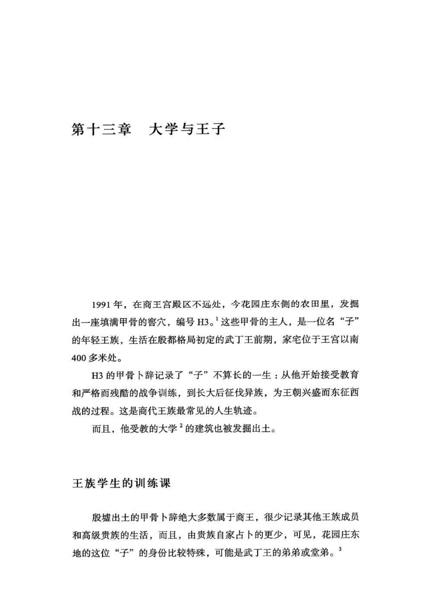
原书阅读器页 264原书物理 PDF 页 262印刷页 250
丁亥卜，子立于左。[[fn:5]]
甲午卜，召（勿）立中，或（惠）学，弓弓（勿）示伐。[[fn:6]]
第二条是其他人的卜辞，显示的是，这次不应当立在队列中部，也不适合砍杀。至于万舞操练为何会有危险，后文会有答案。
除了舞钺，“子”还学习射箭。在成长的过程中，他曾使用不同力度的弓，如“二弓”和“三弓”。后世的《红楼梦》中，也有这种数字划分的弓力：
贾母笑问道：“这两日你宝兄弟的箭如何了？ ”贾珍忙起身笑道：“大长进了，不但样式好，而且弓也长了一个力气。”贾母道：“这也够了，且别贪力，仔细努伤。”
某天，“子”有生病，曾占卜：今天不用上学了吧？不过，这可能是管家替他占卜的。
己卜：子其（疫？），强（勿）往学？（《花东》181）
甲骨文中的“疫”字，字形是一个人躺在床上，身下正在出汗，有人手拿锤子打击其腹部，象征病痛的状态。另有一种解释则为手拿廷石为患者做按摩治疗。无论哪种，它反映的都是卧床生病。
卜辞里的“往学”两字很重要，它表明“子”是去家外面的“大学”学习，而非在家中接受私教。此外，卜辞里还曾多次出现过“学商”，以及出现过一次“学羌”，这可能是模拟羌人和商人之间的战斗，当然，两方战士都由学生扮演。
甲骨文的“学”字，写作（甲骨文，形近似「累」），上面是两手在摆放计数的草棍（爻），下面是一所房子，意为“学习算数的地方”。
上面的两只手有时会被省略，写作（甲骨文，形似「爻」），也可以从两组省略为一组，写作（甲骨文，形似「爻」） ，但下面的房子不能省，它代表学习的场所。不过，在卜辞里，殷都的“大学”似乎没有教过算数。也许因为这是很初级的学习内容，不值得用占卜来记录。至于殷都的大学都有哪些建筑，课程又是怎么开设的，“子”的卜辞里并没有太多信息。
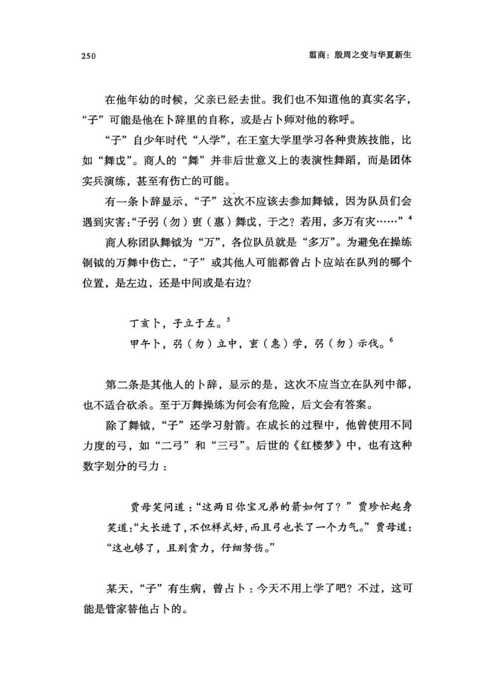
原书阅读器页 265原书物理 PDF 页 263印刷页 251
1973年，在“子”的甲骨窖穴西北400米（今小屯村南）发现了大量刻字甲骨，其中的一片牛骨卜辞（《屯南》662）上有关于大学的课程安排，是大学的总教官留下的。而总教官很可能就是商王本人
第一条卜辞是：丁酉日占卜，今天是丁日，（学生们）是否应该学习万舞呢？第二条卜辞是：还是应该在下个丁日学习？
后面的两条卜辞是关于万舞学习场地的占卜：在“右（甲骨文， 宝盖+束）”学？还是在“内”学？[[fn:7]] 看来，大学的建筑分左右大厅，还有位居中后部的“内”。
1 .丁酉卜，今日丁，万其学？
2 .于来丁乃学？
3 .于右秉学？
4 .若内学？
《屯南》662（图）
商王会亲自关注大学的课程，这也很正常，因为里面的学生都是王的亲戚。另一条王室卜辞显示，商王曾在“入”地建设大学：“乍（作）学于入，若。”（《合集》16406）这个“入”，有学者解释为“内”，王宫之内。不过，它可能还有“汭”之意，即水滨。
1996年，在王宫区南侧，紧邻洹河边，考古队发掘出一处大型建筑基址，它很可能就是殷商时期的王族大学。
如果参观殷墟博物苑的宫殿区，朝北走进大门之后，右手边是一组“54号”建筑基址。它是一座凹字形大型建筑，发掘时被命名为“丁组”。这里是王宫区地势最低的地方，东边紧邻海河，所处环境和建筑构造很接近甲骨卜辞中描述的“子”曾经学习舞钺的大学。它的北面紧邻着王室宗庙乙区和祭祀自然神的丙区；向南400米，是“子”的家宅，花园村东甲骨出土地；向西南200米，是发现安排大学课程甲骨的地方。
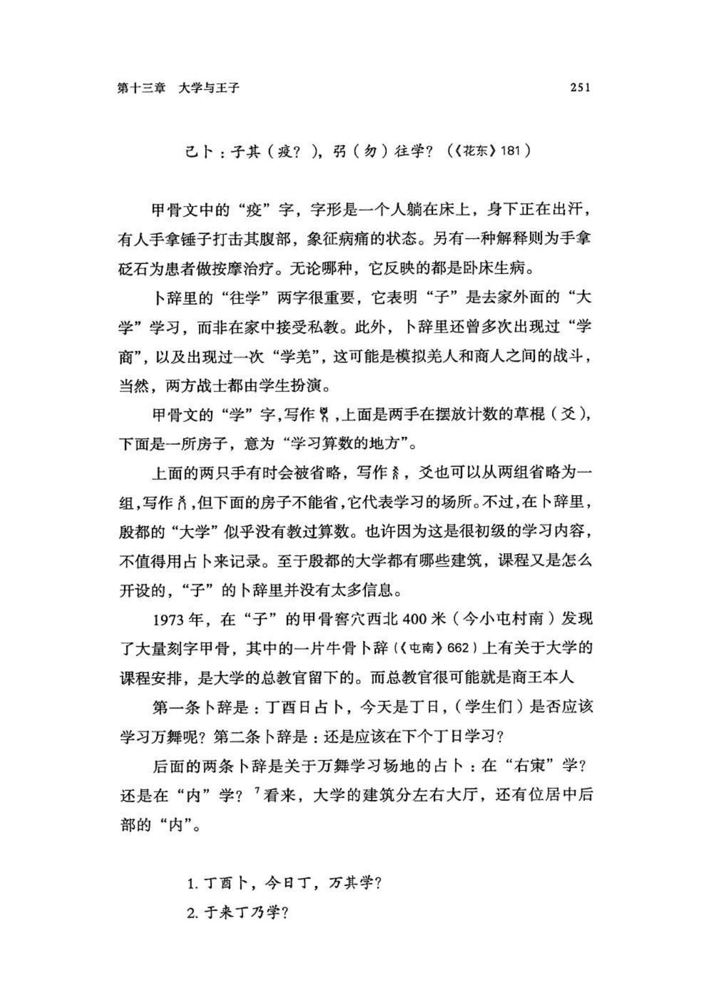
原书阅读器页 266原书物理 PDF 页 264印刷页 252
考古发掘的地层显示，在武丁王即位初年，也就是他准备在洹河南岸建设新王宫的时候，先在丁组这里建设了一组中小型房舍，而且没有用人奠基。对于商人来说，这意味着它并非长期项目，只是过渡性的临时校舍而已。
大概二十年之后，武丁的新王宫相继落成，丁组大学区也进行了大规模的改扩建：南北各新建了一排平行的殿堂（丁二和丁一），长度分别为75米和65米，连接和贯通它们的是西端的一列厅堂（丁三），从而形成一组“凹”字型建筑，并围起一片庭院，对着东边的洹河。
丁组建筑平面图，比例尺数字应为“50米”（图）[[fn:8]]
按照那片安排大学课程的甲骨的描述，丁三就是“内”，在这里朝东望，右侧的丁二就是“右（异体字，宝盖+束）”。而在甲骨文中，（异体字，宝盖+束）字的造型，上面是屋顶，下面是捆束起来的羽箭。所以，它有可能指的是室内射箭场馆。射箭是大学的重要课程之一，而且射箭馆空间大，还可以用以练习“万舞”。
丁组建筑面对着洹河，周边环境是河滩的芦苇湿地，可能还有水沟环绕在建筑的西面、南面和北面，甚至还会有码头供大学生们练习驾船和水战。“子”的卜辞里，就有命令下属准备船的内容（《花东》183），或者说，这所贵族大学也是商人对祖先生活的南国水乡环境的再现。发掘报告对它的描绘是：
三座建筑之间有较宽阔的活动空间，建筑群的整体轮廓呈长方形，东面是由北向南流去的洹水……如果我们认真体验这一古老的建筑群，就会感到它既要给人以宏伟壮观之感，又给人以环境优美、富于生活情趣的感受。
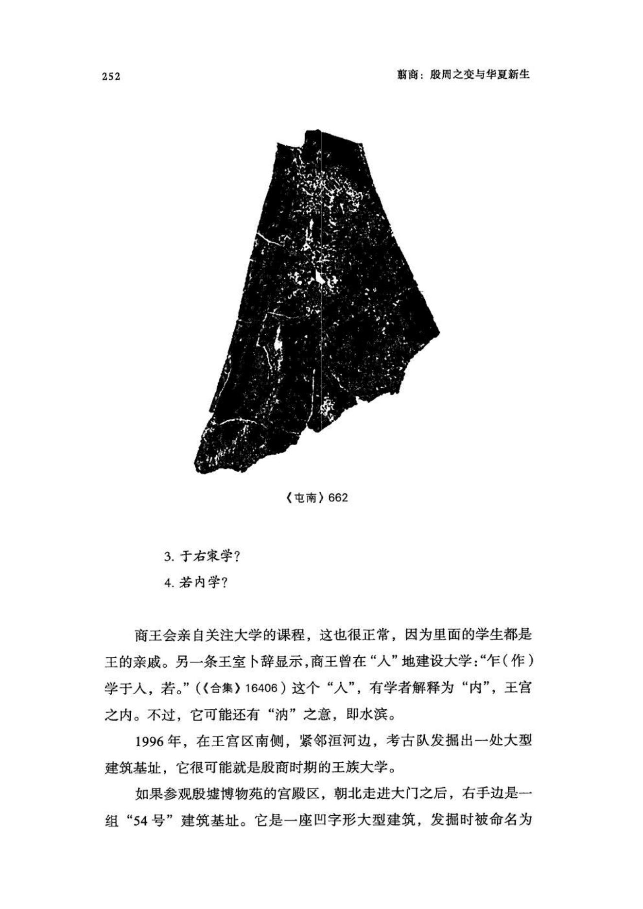
原书阅读器页 267原书物理 PDF 页 265印刷页 253
这片地区低洼临河，土质多沙，并不适合营建大型建筑。但武丁王却不惜工本，工程之初就先挖下2米多深的基坑，填入黄土，逐层夯实，然后才开始埋设木柱和版筑墙体。从柱洞看，最粗的柱子，直径接近1米。
北面的丁一体量最大，是主体建筑，室内出土了一件铜盉，上面有铭文“武父乙”，发掘者推测，它是武丁给自己的父亲小乙王制作的祭器。这件铜盉被装入陶缸埋进了一个挖在地基上的小坑，看来武丁王对这座建筑很是重视，希望父王的灵魂能保佑它。[[fn:9]]
发掘报告称这座建筑为供奉武丁“三父”的宗庙，很可能，里面还供奉着小乙王的两位兄弟（盘庚王和小辛王）的灵位。花园庄东地的那位“子”的卜辞显示，学生们会带着人牲或畜牲到这里献祭。这很好理解，这三位先王也是这些贵族学生的先辈。
武父乙铜盉及铭文（图）[[fn:10]]
陪练角斗士
丁一有一系列朝南的门，门的两侧皆挖有祭祀坑，共十座，发掘者用墓葬M编号。目前已发掘其中八座，每座埋有斩首的三四人，多为俯卧，人头在死者肩部。能够辨识的死者，皆为青壮年男性。
一个比较特殊的现象是，有一半的祭祀坑发现骨制的箭镞，其中两坑分别埋有一枚和三枚，另两坑则各埋有两枚。
以M18为例，共埋有四人。坑底埋有三人，俯卧，头骨被夯碎，颈部朝东；后又在其脚端的坑壁上挖出一个壁龛，里面是呈跪坐姿势的一人，但头骨没有夯碎，而是放在了壁龛里。该坑埋有三枚骨镞，其中一枚在北侧俯卧之人的腿部，另外两枚分别在中间人的上臂和肋骨部位，肋骨上的已经残断。其他三座坑中的骨镞，有的在人牲的腿部（M3和M2），也有的在腰部和前臂（M15）。
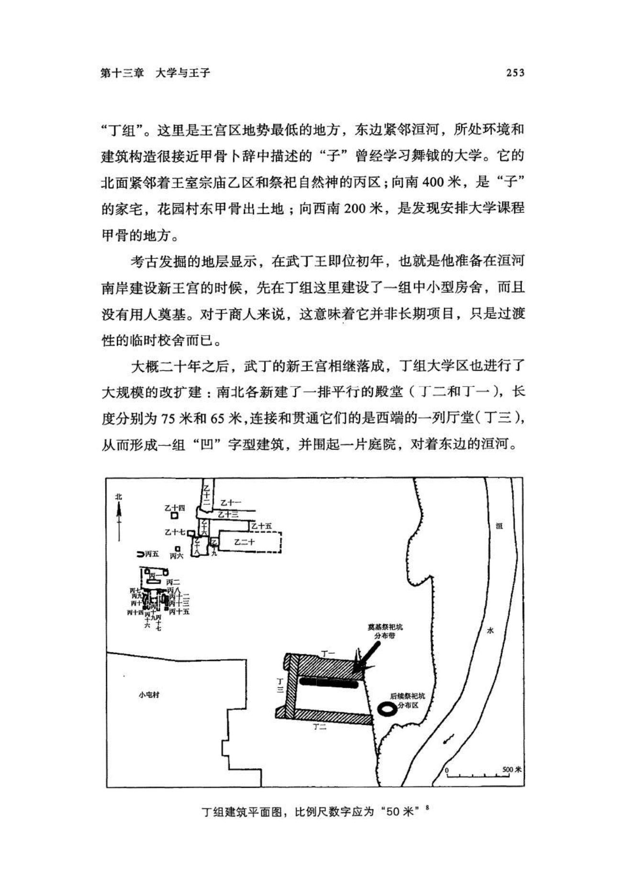
原书阅读器页 268原书物理 PDF 页 266印刷页 254
这些骨镞的出现颇难解释，并非每座坑都有，也并非每个人牲都有。
箭的木杆会因腐朽而消失，那么，这些镞最初是带着箭杆埋下去的吗？M2北侧人牲的腿部有两枚箭镞，其中一枚横在小腿部位，尾端朝坑壁，说明它没有连着箭杆，不然，杆会触及坑壁而改变方向。这些箭镞应当是射到人牲身体上的，只是有些还能被主人完整地拔出来再利用，而另一些因嵌入人骨或筋肉，主人只能把箭杆拔出，箭镞则随着人牲被埋进了坑中。
由此可以推论：可能多数人牲都中过箭，只是有些被拔掉了而已。那些带箭镞的尸骨很多也是被射在腿部或胳膊等非致命部位，说明他们生前并不是在静态而是在奔跑逃命中被射中的，也正因此，中箭的才会是非要害部位。
历史学者李竞恒曾注意到殷墟人牲带箭的现象，他的推论是，这是商人为活捉羌人等俘虏而故意射击其非致命部位所致。[[fn:11]] 本书认为，这种推测难以成立，在真实的战斗中，没有哪一方可以如此从容地选择命中部位，而且中箭之后，俘虏也很难身着箭头被带回殷都，在传统时代，外伤往往会引发致命的感染。
因此，这只能是发生在祭祀场附近。而且，这四座祭祀坑中的箭镞是同种规格，骨质三棱形锋，形制较大，长度超过10厘米，发掘者称之为“大三棱”，其特点是，没有倒锋，容易拔出来继续使用。故而，这些人牲应当是大学生们练习射箭和搏杀的陪练。
商朝王室和“大学”不会缺乏青铜箭镞，但为何不对人牲使用铜镞呢？这可能是基于“训练”的考虑，毕竟锋利的铜镞更容易致命，而骨镞则致死率较低。另外，出土骨镞的锋刃多有磨损也说明，它们是被多次使用的练习品。
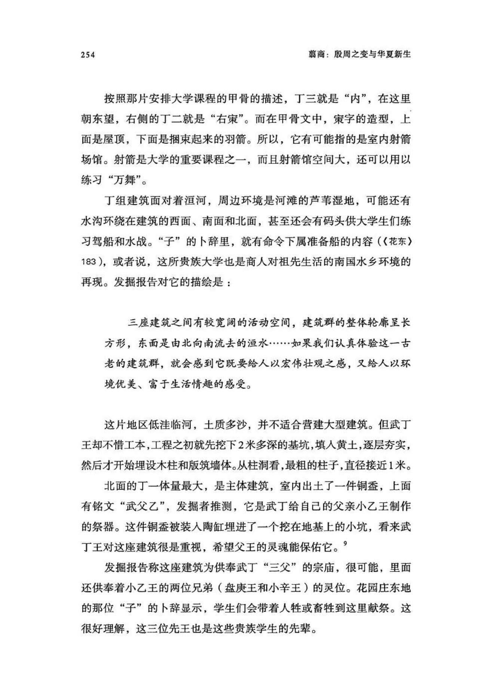
原书阅读器页 269原书物理 PDF 页 267印刷页 255
丁一南檐下的祭祀坑是统一制作和填埋的。先是挖掘坚硬的夯土，有2米多深后，放进人牲的尸体，有些还会打碎几件陶器放进去，象征人牲在地下也会有些生活用品，以让其灵魂更安心地守卫殿堂。然后，填土夯打。人牲的头骨应该就是这么被夯碎的。填满土后，为使祭祀坑不那么容易被发现，又在地面整体铺了一层20厘米厚的黄土。
后经钻探发现，南檐下并不止十座祭祀坑，但为保存房基的完整性，考古队没有继续发掘。据推测，人牲不会少于40人。
丁组建筑全部完成并投入使用后，大学生们还要反复用人牲练习射击和搏杀，这样便会不断地出现新的祭祀坑。这些后期坑建在丁一东南方的空地上，目前已发现成排的六座。其中，M10埋有三具俯身的尸体，没有被砍头，其中一人缺失了手和脚。此外，坑角还发现了两处散落的牙齿，发掘者推测，这应该是“当时被打掉的”。
这座坑最特殊之处在于，不仅有陶器碎片，还有四件小巧的青铜斧、三件环首铜小刀以及两块不及巴掌大的长方形磨刀石。铜斧的整体长度在7—14厘米之间，铜刀长20厘米左右，刀斧基本完整，刃部略有残缺，是使用过的。两块磨刀石上有穿孔，当是为系绳之用，便于随身携带。
与前述M18不同，M10中的这三名人牲的身上没有箭镞，但携带了近战用的刀斧。他们可能是大学生们练习万舞（短兵近战）的陪练，这种高度仿真的肉搏战训练也可以看作一种角斗，比赛规则自然对人牲不利。卜辞中，用钺的“万舞”练习者要分左、中、右站立，可能是众多的学生列队围拢对付少数几名陪练角斗士。
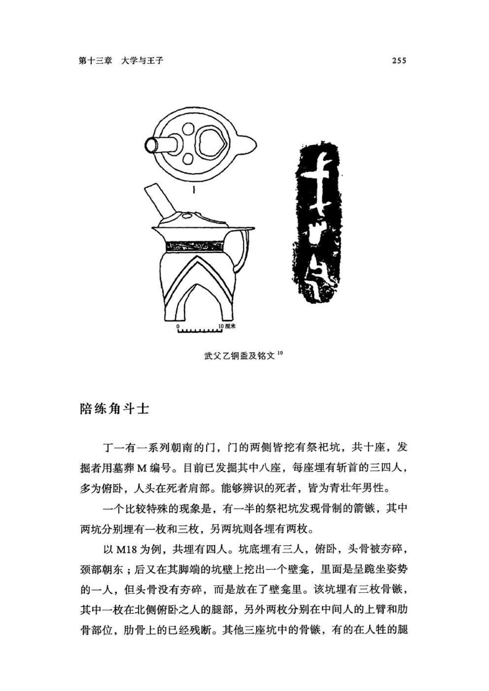
原书阅读器页 270原书物理 PDF 页 268印刷页 256
另外，这四件铜斧的形制比较特殊，并不是商式风格，而是燕山以北草原地带流行的“管銎斧”：顶端铸造出圆管形的銎，銎管上还有一个小孔，将木柄插进去，钉入一枚钉子固定木柄。商式钺则是整体片状，在木柄顶端开槽，把钺上端的凸起部分插入槽中，再捆绑固定。
殷墟地区较少发现这种管銎斧。发掘报告推测，坑中三人可能是来自北方草原的战俘。
M10出土的四把管銎斧线图（图）
倘若丁组建筑是王族大学，那么这些北方战俘就是贵族学生们的陪练。花园庄东地的“子”的卜辞里的“学商”和“学羌”也表明，大学里经常组织对抗性演练，有时甚至要靠商人学生来扮演假想敌。
后期的这些祭祀坑中没有发现骨镞，尸骨也大都有砍伤痕迹，可见人牲皆被砍杀而死。比如，M11中的无左手，M13中的左手和左腿被砍断，M12中的无右手。无手者可能是用胳膊抵挡刀斧所致，这说明人牲可能没有装备盾牌。
人牲几乎都被砍头，但也有相对完整的尸骨的，如M9中的甲，双腿被从膝盖部位捆在一起，双手亦被反缚，而且是该坑三名人牲中第二个被扔进坑的。只是我们已经不知道为何偏偏是他被活埋而不是被砍杀。
如前所述，殷都大学所在地称为“入”，这里也是大学生们祭祀其先祖（先王）的地方。在“子”的卜辞里，有两次提及在“入”祭祖：第一次，是剁一头牛，再“伐”一人（夷）；第二次，是伐羌一人。
甲午：宜一牢，伐一夷？在入。一二三。（《花东》340）
己酉夕：伐羌一？在入。庚戌，宜一牢，弹。一。（《花东》178、376）
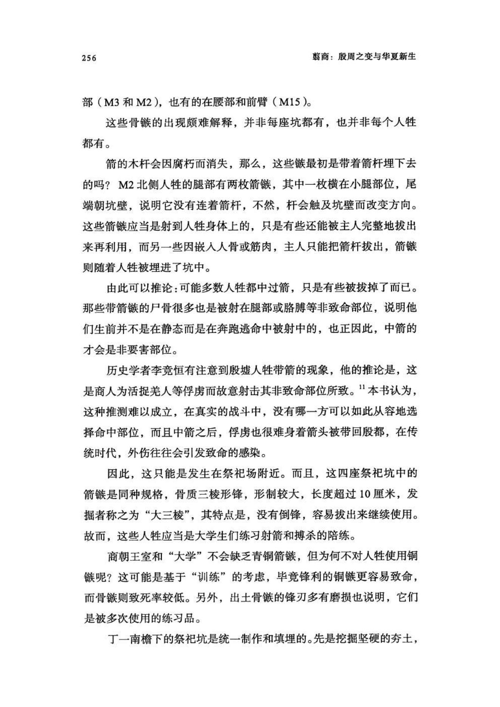
原书阅读器页 271原书物理 PDF 页 269印刷页 257
从“子”的卜辞可见，有些人牲并非学校提供的，而是学生自备，可能先进行搏斗训练，最后把处死的人牲奉献给祖先。在殷都大学长达二百余年的历程中，因作陪练角斗士而死的人牲肯定不止已发掘的六座坑中的这些，许多尸体可能另有处理，或者只有具有特殊纪念意义的才会被葬人祭祀坑。
“子”的贵族人生
在“子”的众多卜辞里，他最日常的工作是向先祖先妣献祭。多数是用猪牛羊和酒（鬯），也有少数是用人，如为了祭祀祖庚和祖辛，“子”分别“册羌一人”（《花东》56）。在甲骨文里，册，是剁成块的意思。此外，他还祭祀过与商族始祖有关的“玄鸟”。（《花东》1557）祭祀经常在一个名为“来鹿”的地方举行，这应是“子”的庄园领地。
他的射猎活动也很多，主要在“品鹿”，这应该是私家猎场。马车是“子”的生活中一项很重要的内容，他曾多次占卜左马或者右马有没有灾病。看来拉车的马各司左右，一般不混用。
“子”很关心自己的健康，多次因为耳鸣、做梦、心疾、首疾、目疾占卜。他经常有头疼症状。
“子”和武丁的夫人妇好关系密切，他们应当是亲属，后来成为妇好的侍卫官。在他的卜辞里，“王”只出现过两次，而妇好出现过几十次。“子”经常占卜是否应该到某地见妇好，是否应该和妇好一起举行祭祀。他常向妇好贡献礼物，有一次贡献了六人（《花东》288），还贡献过一名“磬妾”，应当是擅长演奏磬的女子。（《花东》265）
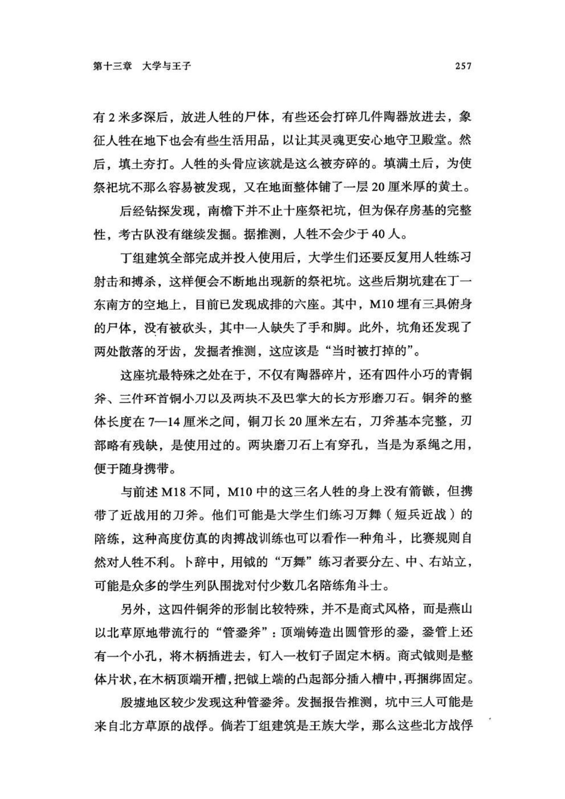
原书阅读器页 272原书物理 PDF 页 270印刷页 258
妇好应该曾负责为商王采购马，因为有些马贩子（多御正、多贾）多次通过“子”向妇好送礼，希望得到参见的机会。“子”安排过不止一次集体参见，每次都由马贩子拿出十捆丝绸作为觐见礼物。
有一个叫“弹”的马贩子，经常到“子”的家里奔走服务，想通过“子”送给妇好三捆丝绸，以获得单独接见的机会。“子”就占卜问：是否应该转达这个礼物？占卜结果是“用”，也就是可以。“子”又占卜：是否应该向妇好引荐“弹”呢？占卜结果是“不用”。（《花东》63）
“子”自家也经常买马，他常到马贩子处看“新马”。看来他相马的技术不佳，卜辞里记载说：“自贾马其又死。”意思是说，有一次，马刚买来不久就又死了。
武丁王时期，商朝对外战争频繁，“子”曾经考虑是不是应该跟随一位叫“白”的将领去征伐“邵”地。他还曾试图通过妇好和“白”拉近关系，向“白”赠送过占卜用的龟壳。但最终他应该还是没去，因为卜辞里没有进一步的信息。（《花东》220、237）
在卜辞里，“子”的妻子被称为“妇”，妻子的母亲被称为“妇母”。看来这位岳母喜欢对“子”的事务发表意见，比如“子”在卜辞里曾询问：“妇母让我和某甲在一起，不要和某乙在一起，是否应该听从？ ” （《花东》290）卜辞里没有出现“子”的子女信息。
“子”的寿命可能不长，毕竟当时成年人的平均寿命只有三十岁左右。在他死后，他占卜过的甲骨被埋入了2米多深的窖穴之中。1991年，因修筑通往殷墟博物苑正门的公路，考古队决定对工程用地进行考古调查，这才发现“子”的甲骨坑（编号H3）。其中，有龟甲一千五百多片，刻辞的五百多片，还有少量卜骨。
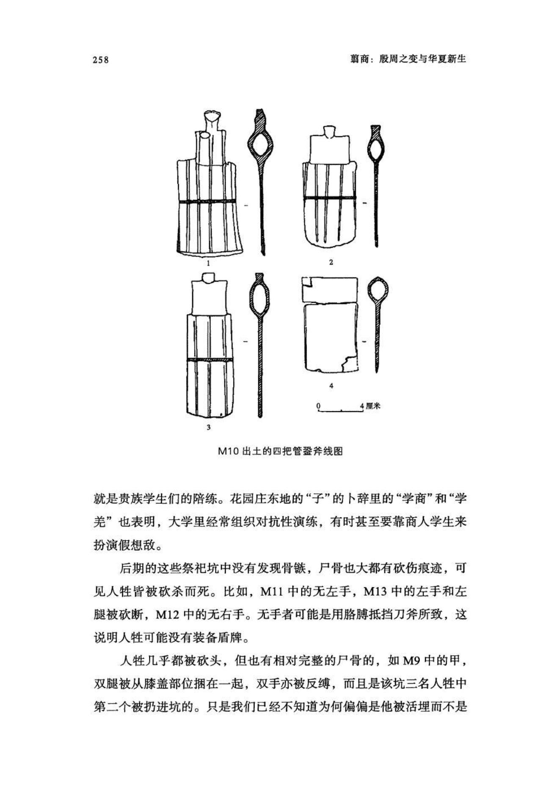
原书阅读器页 273原书物理 PDF 页 271印刷页 259
由于从未被盗掘者发现，坑内甲骨保存得非常完整。许多整版的龟甲虽然遍布裂纹，非常脆弱，但经过技术处理，基本保持了原貌。倘若是被非法盗掘，绝大部分甲骨都将变成碎片，无法识别。历代商王留下的甲骨卜辞虽然数量多，但大都是盗掘出土，非常凌乱，很多同属一王或同一批次的卜辞都丧失了联系。考古学者们希望通过字体和占卜师的名字对零散的卜辞进行分组、划分年代，但结论往往充满争议。这是盗掘带来的无法挽回的信息损失。
五年之后的1996年，“子”曾经受业的大学所在地丁组基址也被发掘出土，这位殷商王子的生平这才展现在了世人面前。这是殷商时代关于一个人的独家而完全的记录文献。
“子”的住宅和坟墓没有被发现；但一般来说，他使用过的甲骨不会被丢弃到远处，应该是在自家院内挖坑埋藏。很可能，他的宅院基址已经被后世破坏。
战死的族长“亚长”
“子”的甲骨坑（H3）被发掘十年后，在它的西北侧数十米处又发现了一片墓葬，其中有一座比“子”晚两三代人（殷墟二期末）的贵族墓，编号M54。商人都是聚族而居，居葬相邻，所以M54的主人很可能是“子”的后裔。
2000年冬季，在花园庄东的农田里，考古工作者用洛阳铲进行钻探调查，初步确定了M54的位置。由于1991年这里出土过“子”的甲骨坑，人们判断可能会有高等级大墓，计划2001年开春解冻后发掘。结果盗墓者一直追踪着考古队的进展，趁夜间找到了墓穴位置，好在有村民发现异常，将此事报告给了考古工作站。于是，考古队决定赶在盗墓贼之前进行发掘。就这样，在2001年初的大雪中，墓穴内的椁室得以揭开。由于从来没被盗墓贼光顾过，大量随葬器物和殉人还保持着下葬时的布局。[[fn:12]]
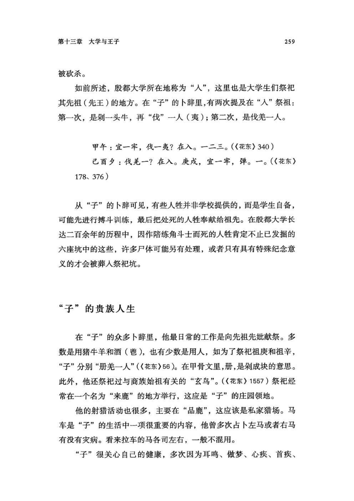
原书阅读器页 274原书物理 PDF 页 272印刷页 260
这座墓穴，口部南北长5米，宽3米多，向下逐渐扩大，深约6米。墓底四壁有高约1.8米的夯筑二层台，中央是黑漆木板搭成的椁室，里面放着雕花夔龙纹、镶金箔的红漆棺木。
很多随葬铜器铸有“亚长”族徽。“亚”，表示主人有军事首长身份；“长”，是家族的族徽，字形是一个人侧面站立，脑后有很长的头发，手中扶杖，像是个老人。可能是“子”的后人繁衍出了“亚长”氏族。
墓主是一名三十五岁左右的男子，头骨面部略有女性特征，俯身直肢而卧，右脚掌骨有长期跽坐（臀部坐在脚上）形成的磨痕。这是上古人习惯的坐姿。在殷墟发掘的贵族墓葬中，M54主人的死因比较特殊，尸骨上有多处伤痕：一，左上臂肱骨上有三条锐器砍痕，长度都在1厘米左右。“这三处砍痕均未见骨骼自我修复痕迹，说明砍痕形成于墓主人死亡之前的时间很短，即墓主人遭受连续打击后不久即死亡。” 二，一根左肋骨的中前部位，有明显的锐器砍痕。三，骨盆中部靠右侧被刺穿一孔，深约2厘米，宽1.15厘米，”……内部呈圆孔洞。从创口形状推测，应是矛戈类刺兵形成”。四，大腿骨后方也有很深的砍痕。
这位“亚长”氏的族长很明显是在战争中受伤而死的。敌人未能对其头部一击致命，可能是因为他戴了铜盔（胄）。打斗的时间可能非常短暂，其左臂被连续砍伤，说明此时他尚能站立，但已无力格挡或逃避。
“亚长”族徽铭文（图）
我们可以对当时的现场稍作复原：在战斗过程中，他应该是冲在前方，又因为其服饰属于贵族长官，所以受到多名敌人的攻击。首先是被迎面敌人的铜矛刺入右下腹，矛锋深入骨盆。虽穿戴半身铠甲，但这个部位很难防护，而且矛锋也足以贯穿常用皮甲。他被迫用双手抓握矛杆，以防对手再刺，但铜矛已嵌入人骨，不容易拔出。此时，又有敌人从左方靠近，挥刀连续砍杀，在他的左上臂和左肋造成多处伤口，致使左臂肌肉断裂失能。从股骨上的伤痕看，应该还有一支戈至少两次砍或勾在其左大腿和臀部。
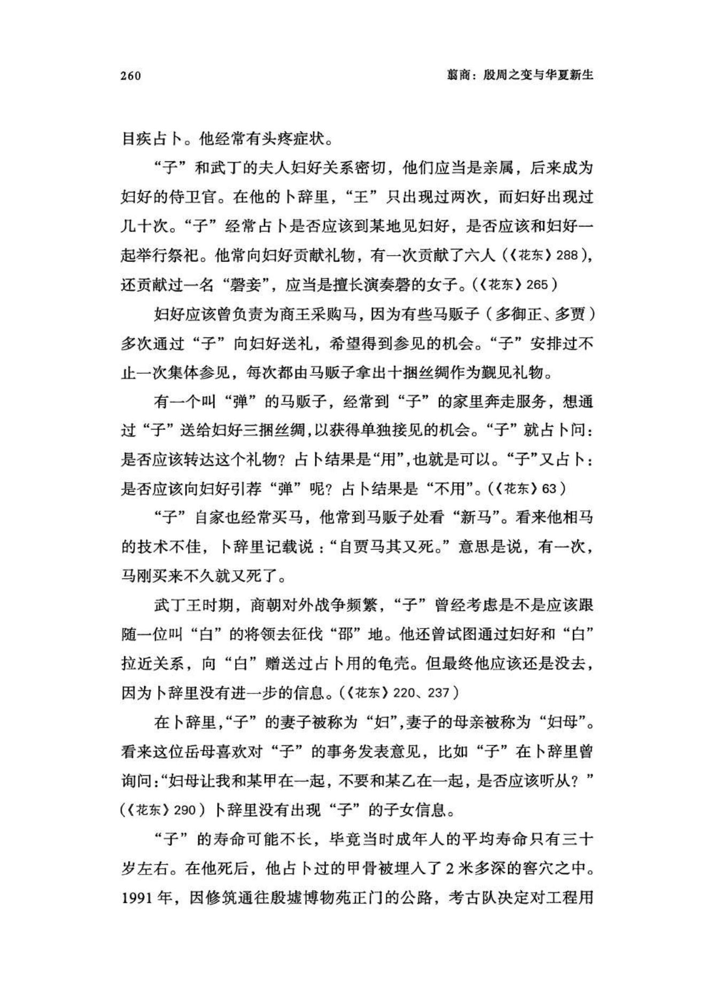
原书阅读器页 275原书物理 PDF 页 273印刷页 261
他之所以未被敌人斩首，应该是己方士兵上前把他救了下来。但在随后不到一天的时间里，“亚长”会因失血和创口感染而昏迷，这时，军中巫医会对他进行急救，但也无力回天。最终，他的尸体被马车拉回了殷都丧葬。为了减轻腐烂的气味，他的尸体被撒上了大量花椒粒。对他的战死，商王也可能会表示慰问，并赏赐一些钱物。
在王陵区之外的商代贵族墓葬中，花园庄东M54的随葬品比较丰厚。首先是有大量的铜礼器。知名度比较高的是一件重达14斤多的“亚长牛尊”。这是一头站立的水牛，造型圆润可爱，嘴微张，全身布满龙、虎、鸟形花纹，尤其牛背上还有一个带把手的盖子，可能是为了便于在牛腹中存放货贝。
墓中共有40件铜礼器和铜容器，有些稍薄的铜器在入葬时被打碎了，出土后，考古工作者尽量把它们拼贴复原了起来。这头著名的“亚长牛尊”就是复原的产物。
复原后的"亚长牛尊”（图）
大件的铜兵器有161件，其中，钺七件，矛78件，戈73件，卷头大刀三件。除了主人自己使用的钺，其余的戈、矛和刀能装备超过150人的部队，而这肯定还不是主人家的全部兵器。考虑到氏族成员自家的装备，亚长氏族的兵力应该会有上千人。
较厚重的一件铜钺重12斤左右，其他的较薄，多在1.4斤左右。多数的戈和矛都连接着一段木柄（秘），只有十几厘米，但最长的一件却有38厘米。这可能是为了节约空间，入葬时把木柄锯断了。
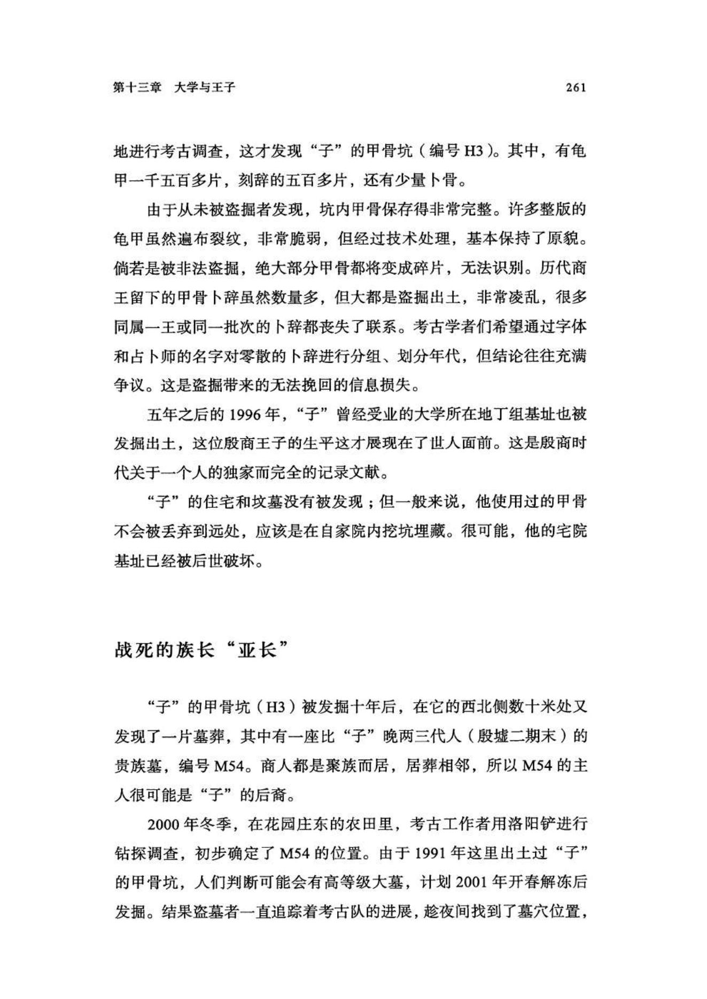
原书阅读器页 276原书物理 PDF 页 274印刷页 262
铜镞有881枚，分好几处成束摆放。从残留痕迹看，有些下葬时带有木杆，是完整的羽箭。墓中还有些盾牌和弓的遗迹。
车马器有铜策（马鞭杆）两件和弓形器六件，说明主人拥有至少六辆马车。弓形器上铸有繁复的花纹，有的还用绿松石镞嵌。考虑到其他氏族成员，亚长氏族应该拥有不少于十辆战车。
乐器有铜镜一套。铜钱是军事首长发布命令的工具之一，所谓“鸣金收兵”。此外，还有各种铜工具和杂物，其中，圆形铜泡有149件，可能是缀在皮甲上的。
比较特殊的是主人棺内的一件铜“手形器”，比正常的右手略小，长13厘米，呈微弯曲的半握姿势，上面铸有目形纹饰，甚至有指甲的纹理。它的小臂部分中空，用来容纳插入的木柄，但木柄已经腐蚀消失，无法确知其具体长度。
和其他的青铜器不同，这件手形器被放在主人的棺内，靠近左小腿处。墓主的两手基本完整，手形器也不在主人右手处，所以并不是义肢。有学者推测，它是用来在鼎内捞取食物用的，类似餐叉。但餐具似乎并不需要单独放入主人棺内。从它与墓主的亲密程度看，应当经常被主人握在手里，有点类似权杖。
亚长铜手形器线图（图）
铜工具中有小刀五件。有两件的手柄末端铸造的分别是马头和鹿头，刀柄的纹饰则类似长脖子。还有一件整体呈虎形（发掘报告认为像狗），长尾延伸成刀的刃部，有完整的四腿，可以站立在桌面上。
随葬的玉石器，除了小件的玉饰和玉雕，还有些玉兵器，但实用价值不高，主要作为军事首长身份之象征：玉钺一件，玉戚六件，玉矛两件，玉戈八件；此外，还有玉质刃部和铜质装柄结合的“铜骰玉援矛”两件和“铜内玉援戈”三件。
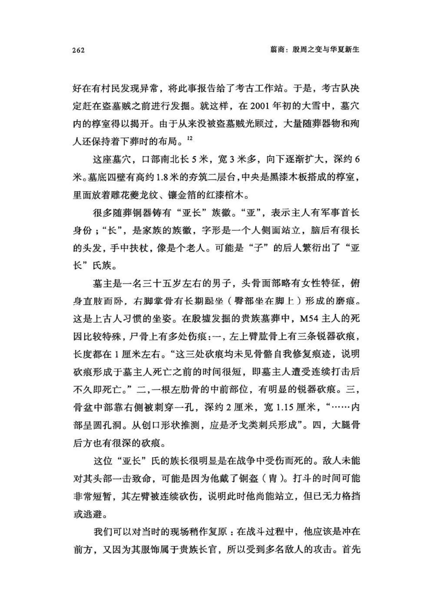
原书阅读器页 277原书物理 PDF 页 275印刷页 263
亚长墓铜小刀线图（图）
随葬的骨镞有43枚，没有锋刃，前端平整。发掘者推测，这是为了射猎时不损伤猎物的皮毛。本书认为，这也可能是训练品，非致命箭镞可以减低人牲的致死率，士兵可以获得更多的训练机会。
在墓室二层台上，有大量木棍，共47根，长度在1.3—3.6米之间，直径约3厘米。有些木棍刷红或黑色漆。发掘者推测，这是部分铜戈和铜矛的木柄，因为太长难以放进椁室，就被截断放在了二层台上。
发掘出海贝1472枚，几乎都是经过研磨的货贝。
陶器不多。有些陶器内部有大量梅子核，可能是熬制的果羹；还有的里面有较多碎骨，发掘者推测是肉羹。
墓穴内用了15名殉人和15只狗随葬，其中一只狗在墓室底部正中的腰坑内，这是商人“腰坑殉狗”的传统礼仪。离墓主最近的六名殉人，在椁室内的棺材外，左右各三人，全尸，但骨骼保存较差，可能是椁内的某些随葬品有较强的腐蚀作用。这些人应是先被处死，然后用草席包裹身体放入椁室之内的。椁室外的墓底有四名殉人，能鉴定性别的有三人，全是男性，只有一人在二十五岁左右，其余都是十几岁。
上述所有全躯的人牲，姿势和墓主一样，都是俯身直肢。在殷墟的墓葬中，这颇为奇特。可能是因为墓主死于兵灾，颇不吉利，所以用这种方式来禳解。
二层台内有三颗人头，[[fn:13]] 一颗是一名二十岁左右的男性的；其余两颗则都是女性的，年龄分别为三十岁和四十岁左右。值得注意的是，三十岁左右的这名女性，应该自幼就拔掉了下牙的两颗门齿。这属于“东夷”习俗，自大汶口文化以来，在山东及胶东某些地区一直存在。墓主生前很可能参加过征讨东夷的战争，并从当地带回了一些俘虏。
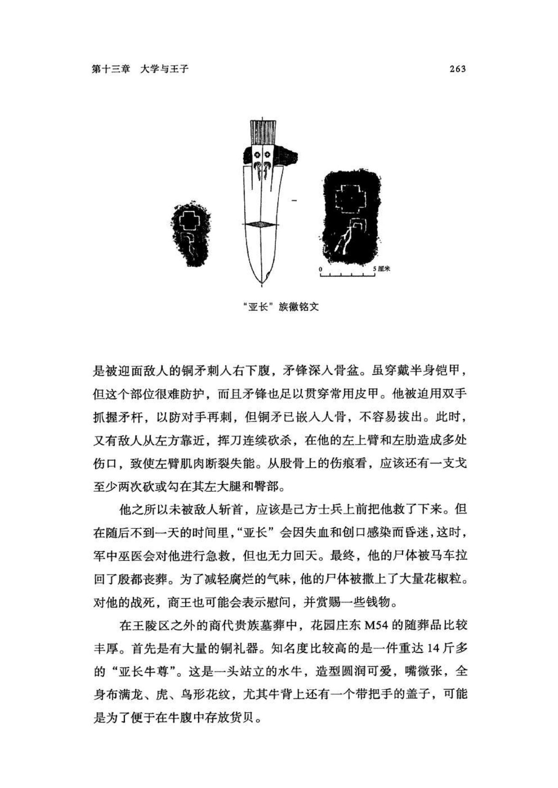
原书阅读器页 278原书物理 PDF 页 276印刷页 264
和人头同一层面的二层台内，还有牛腿和羊腿，以及陶制的豆、觚、爵，它们应当是用来盛放食品和酒的。
放置完随葬品和人牲后，开始往墓穴里填土夯筑。夯填的过程中，还会埋入殉人和殉狗：到一半深度时，杀了一名两三岁的幼儿，将其头颅面朝下扣在了土中。到距离地面1米左右时，又杀了一名二十五岁左右的女子，将其头颅侧放在了填土内。对头骨和牙齿的鉴定表明，这名女子生前应该营养较好，属于物质生活比较丰富的人群。根据发掘报告，共埋入四名成人和一名幼儿的头骨，但没有发现他们的身体，而且该墓周边也没有发现人祭坑或者无头尸坑。
〔按语：使用高等级人牲〕
在墓葬填埋数年后，墓主的家人为其建造了一座墓上“享堂”：先是在墓穴正上方筑起1米多厚的夯土台基，并筑进一枚成年人头骨和一名全躯的少年，然后在台基上建造亭子式享堂。
若干年后，享堂塌毁，有人便在它的基础上挖了一座近方形坑，坑底埋入一名被砍头的仰身直肢的男子，人头放在身体的左侧，右侧则是两具儿童的尸体。这座祭祀坑，可能出自“亚长”的后人。
在M54附近，考古队共发掘出40座竖穴墓，大多数是随葬品较少的小墓，有殉人的只有两座，其中一座殉二人（M82）。这些墓葬可能多是亚长氏族的成员或者属民的，看来他们多数人并不富裕。
“子”和亚长的后人应该繁衍了很多代。周灭商后，其后人和其他王族被迁到了商族人的起源地——商丘，并在那里建立宋国，继续传承商王家族的血脉。至于他们能否放弃血腥的杀祭宗教，这就是一百多年后的故事了。
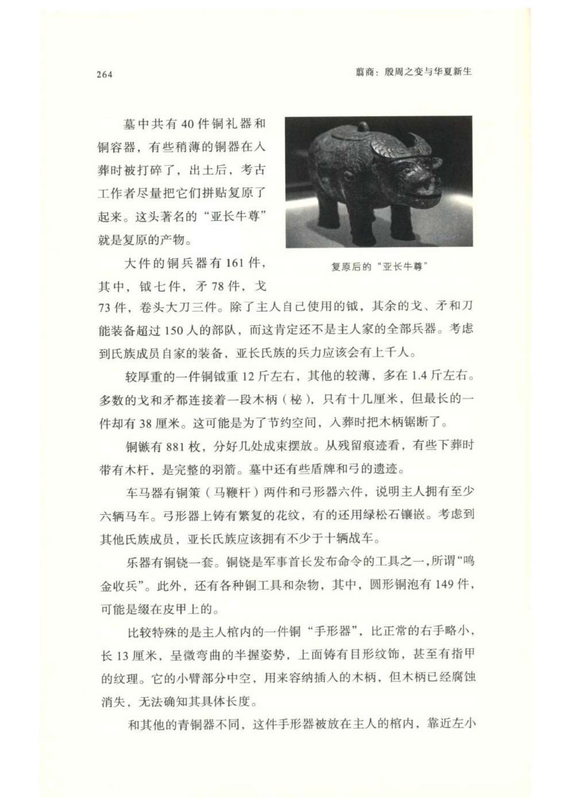
原书阅读器页 279原书物理 PDF 页 277印刷页 265
注释
1中国社科院考古所：《殷墟花园庄东地甲骨》，云南人民出版社，2003年。以下简称《花东》。殷墟有两个花园庄，一个在洹河北岸的洹北商城内，一个在洹河南岸的宫殿区南侧（已整体搬迁），出土H3甲骨坑的在洹河南。
2商代已有大学，如《合集》3510：“右学。”《合集》20101：“丁巳卜，右学。” 《礼记•王制》记载：“殷人养国老于右学。”郑玄解释说：“右学，大学也。”《屯南》60：“于大学寻”。
3关于这位“子”的具体身份，学者们有不同的解释。有人认为是王室近亲，但又认为“子”没有祭祀盘庚王的卜辞，说明他是盘庚之前的王繁衍出的旁支。本书认为，这种推测方式可能有问题，因为盘庚一代有四位兄弟当过王（阳甲、盘庚、小辛、小乙），盘庚之外三王的后裔不当王自然就不会祭祀盘庚，但这不影响其作为王子的尊贵地位。花园庄东地“子”的卜辞里从未提及“父”，很难确定他的父亲是谁。
4《花东》206。
5《花东》50。
6中国社科院考古所：《殷墟小屯村中村南甲骨》，云南人民出版社，2012年，489条。
7《屯南》662O另可参见宋镇豪《甲骨文中的乐舞补说》，《海南大学学报》（人文社会科学版）2020年第4期。
8中国社科院考古所：《安阳殷墟小屯建筑遗存》，文物出版社，2010年。以下有关小屯建筑丁组遗存的基本信息、数据及图片未注明出处的，皆出自该书，不再详注。
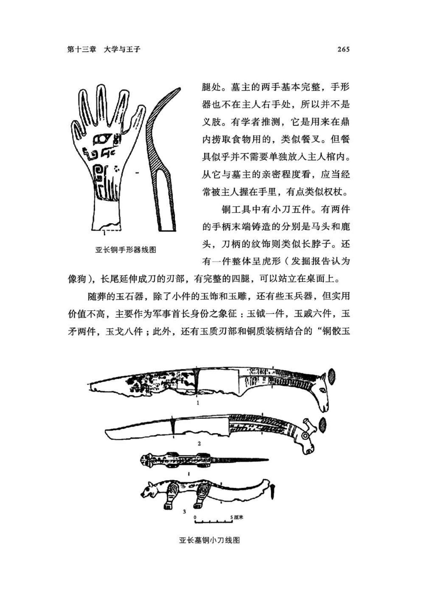
原书阅读器页 280原书物理 PDF 页 278印刷页 266
9按照发掘报告的描述，这种器物坑有对称的两座，但另一座已经被后世破坏，只剩了一些陶片。
10王恩田：《武父乙孟与殷墟大型宗庙基址F1复原》，《中原文物》2006年第1期。
11李竞恒：《干戈之影：商代的战争观念、武装者与武器装备研究》，四川师范大学电子出版社，2011年。
12中国社科院考古所：《安阳殷墟花园庄东地商代墓葬》，科学出版社，2007年。以下凡有关M54的基本信息及图片，未注明出处的，皆出自该书，不再详注。
13《安阳殷墟花园庄东地商代墓葬》发掘报告称，这三个人头“并未放置在二层台上，而是放置在二层台内”。此描述有些难以理解，“二层台内”有两种可能，一种是夯筑在二层台的土内；另一种是在二层台侧面掏出壁龛、放置人头。
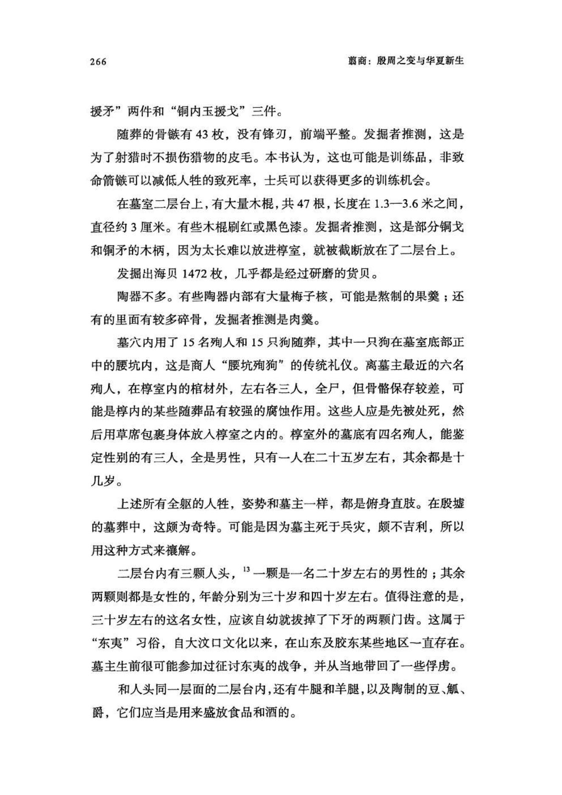
原书阅读器页 281原书物理 PDF 页 279印刷页 267
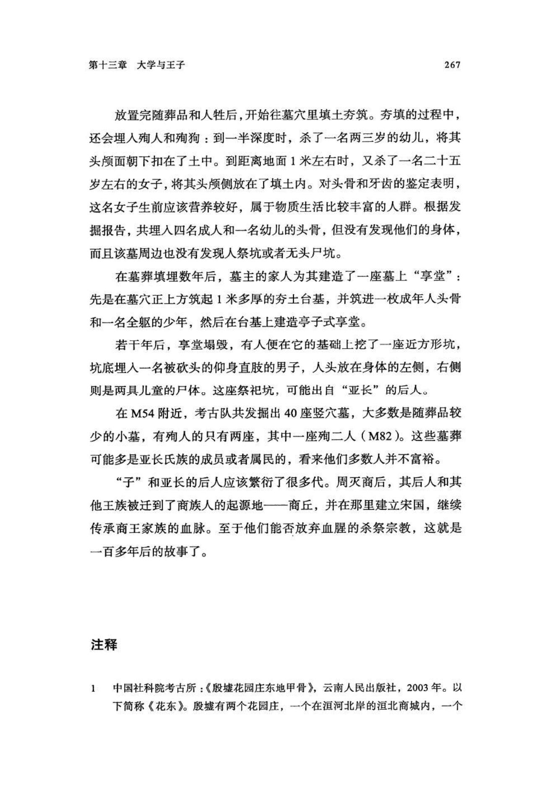
原书阅读器页 282原书物理 PDF 页 280印刷页 268
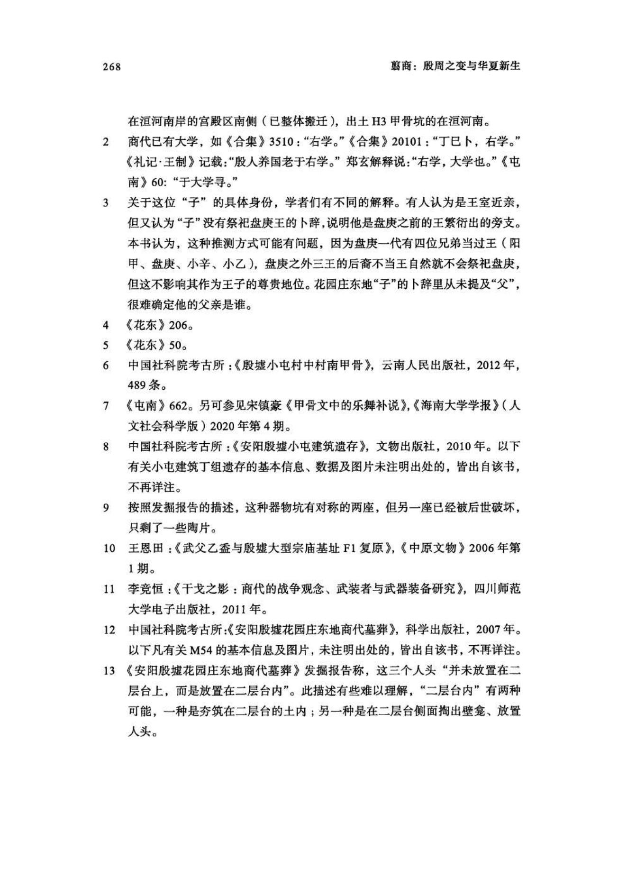
编辑札记
标记
先在正文中选择文字，再输入拼音；可用“拼音；简注”。